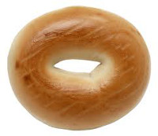

| Selections | Price |
| Bagels |  |
| Plain Bagel—These are our fresh-made, plain, warm golden bagels. See below for pricing for various toppings. | $1.30 |
| Thin Bagel—These are our fresh-made, plain, warm golden bagels, but thinner. Same great taste, but less bagel. Great for those watching their carbs. (Note: All out bagels can be oredered as "thin bagels", for the same price as their regular counterparts.) | $1.30 |
| Raisin Bagel—Our standard bagel, but with raisins baked right in for added flavor. | $1.75 |
| Sesame Bagel—Our warm golden bagel topped with sesame seeds. | $1.30 |
| Wheat Bagel—For our health-conscious customers, we are pleased to offer a wonderful bagel made from fine wheat flour. They can be ordered as sesame for the same price, or as raisin variety for $.40 more. | $1.60 |
| Spreads and Toppings | |
| Cream Cheese—Top your bagel with a generous helping of tasty Philadelphia Cream Cheese spread. | $.35 |
| Chive and Onion Cream Cheese—Top your bagel with a generous helping of tasty Philadelphia Chive and Onion Cream Cheese spread. | $.45 |
| Sundried Tomato and Basil Cream Cheese—Top your bagel with a generous helping of tasty Philadelphia Sundried Tomato and Basil Cream Cheese spread. | $.55 |
| Nova Scotia Lox—An amazing sugar cured salmon to top off your bagel. Excellent with cream cheese as well. | $3.50 |
| Bagel Sandwiches |  |
| Bagel Reuben—We introduce our new kosher (without the Swiss) Reuben done on a bagel of your choosing. Fine corned beef topped with sauerkraut and Thousand Island dressing. | $6.50 |
| Turkey Bagel—Try our wonderful turkey bagel, with honey-smoked turnkey, lettuce, tomato, and pickles. | $5.30 |
The Lox
Bagel and Coffee Shop
The Lox | Copyright 2014